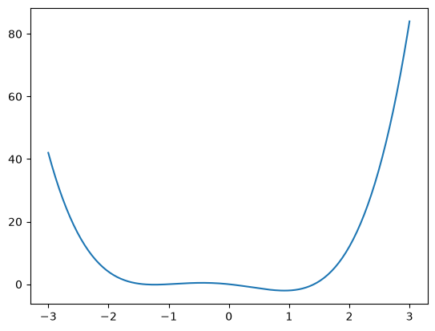
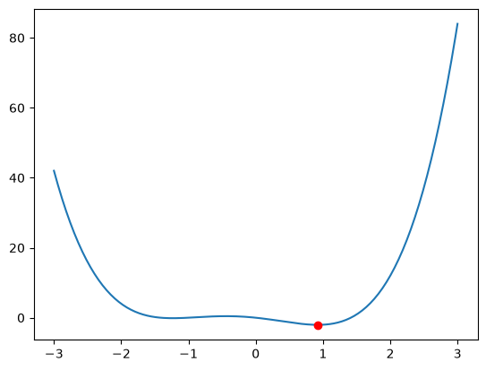
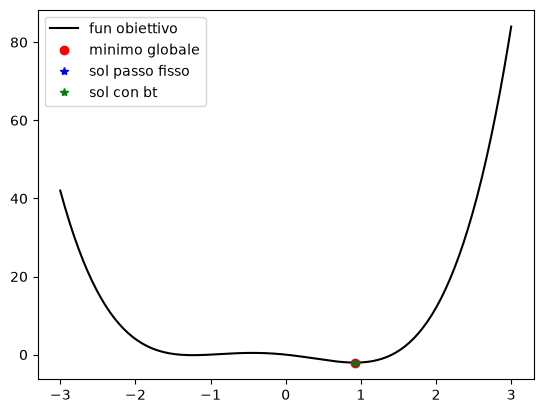
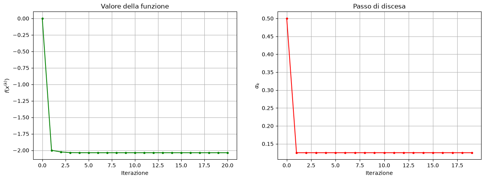
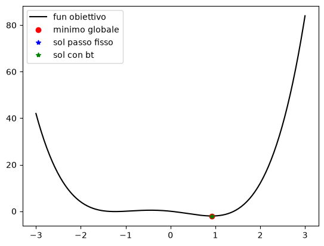
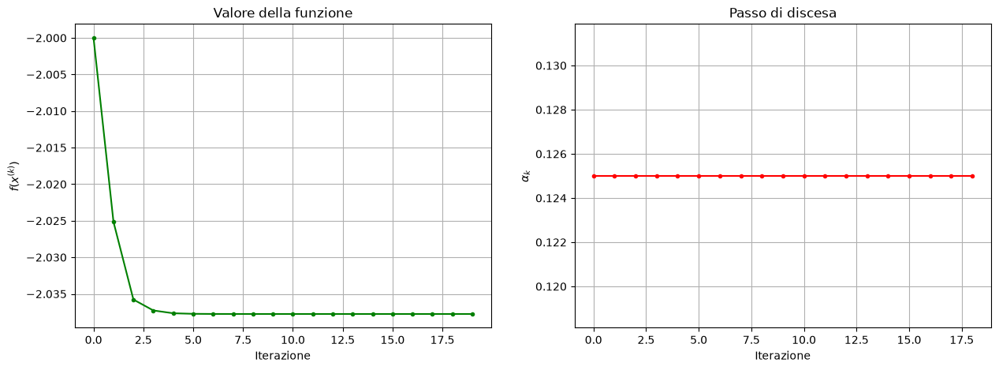

Esercizio 3) Caso con \(f: \mathbb{R} \to \mathbb{R}\)#
Considerare la funzione $\( f(x) = x^4 + x^3 - 2x^2 - 2x, \)\( che ha minimo nel punto \)x^* = 0.92222$.
Poi:
definire le funzioni python per
fegrad_f;visualizzare la funzione nell’intervallo [-3, 3];
calcolare il valore di \(f(x^*)\) e verificare che \(x^*\) è un punto stazionario di \(f\);
eseguire sia il metodo del gradiente con passo fisso che con backtracking.
utilizzare \(maxit = 100\), \(tol_{grad} = 1e-6\) e \(x_0 = 0\), in entrambi in casi;
settare i parametri \(\alpha=0.01\) come passo fisso e \(\alpha_0 = 1\) per il bt.
Confrontare le soluzioni e i rispettivi errori. Guardare le soluzioni ottenute sul plot della funzione obiettivo.
Per il metodo con backtracking, creare i seguenti plot:
grafico con iterazioni in ascissa e valore della funzione in ordinata;
grafico con iterazioni in ascissa e lunghezza del passo di discesa in ordinata.
provare diverse configurazione di parametri, per esempio:
\(x_0 = 1\), \(\alpha=1\) come passo fisso e \(\alpha_0 = 1\) per il bt;
\(x_0 = -3\), \(\alpha=0.01\) come passo fisso e \(\alpha_0 = 0.1\) per il bt;
\(x_0 = +3\), \(\alpha=0.1\) come passo fisso e \(\alpha_0 = 0.1\) per il bt.
Confrontare le soluzioni e i rispettivi errori. Guardare le soluzioni ottenute sul plot della funzione obiettivo.
Per il metodo con backtracking, creare i seguenti plot:
grafico con iterazioni in ascissa e valore della funzione in ordinata;
grafico con iterazioni in ascissa e lunghezza del passo di discesa in ordinata.
modificare il codice col backtracking aggiungendo i criteri di arresto visti a lezione
early stopping sulla funzione obiettivo: \(| f(x^{k+1})-f(x^{k}) | < {tol_f}\ \) con \({ tol_f} = 1e-6\)
variazione trascurabile degli iterati: \( || x^{k+1}-x^{k} | < {tol_x}\ \) con \({tol_x} = 1e-6\)
Guardare a come cambiano le soluzioni al variare di \(tol_{grad}, tol_f, tol_x\) ciascuno da \(1e-6\) a \(1e-3\).
#### punto 1 ########################
import numpy as np
import matplotlib.pyplot as plt
def f(x):
y = x**4 +x**3 -2*x**2 -2*x
return y
def grad_f(x):
y = 4*x**3 + 3*x**2 -4*x -2
return y
#### punto 2 ########################
x = np.linspace(-3, 3, 200)
y = f(x)
# Visualizzo
plt.plot(x, y)
plt.show()

#### punto 3 ########################
x_star = 0.92222
y_star = f(x_star)
print(y_star)
#grad_star = grad_f(x_star)
#print(grad_star)
# Visualizzo
plt.plot(x, y)
plt.plot(x_star, y_star, 'o', color="red")
#plt.ylim( (-2.5, 2.5) )
plt.show()
#print(f"x=1 y={f(1)}")
#print(f"x=0.9 y={f(0.9)}")
-2.0377480413610463

#### punto 4 ########################
def discesa_gradiente(
f, # funzione obiettivo
grad_f, # gradiente della funzione obiettivo
x0, # punto iniziale
alpha=1.0, # lunghezza del passo, alpha>0
tol_grad=1e-6, # tolleranza sulla norma del gradiente
maxit=1000 # massimo numero di iterazioni
):
"""
Discesa del gradiente con passo fisso.
"""
# Inizializzazioni
x = np.asarray(x0, dtype=float).copy()
k = 0
fx = f(x)
grad = grad_f(x)
grad_norm = np.linalg.norm(grad)
history = {
"x": [x.copy()],
"f": [fx],
"grad_norm": [grad_norm]
}
# Ciclo iterativo di risoluzione
while grad_norm > tol_grad and k < maxit:
# Direzione di discesa
p = -grad
# Aggiornamento dell'iterata
x = x + alpha * p
k += 1
# Aggiornamento delle quantità
fx = f(x)
grad = grad_f(x)
grad_norm = np.linalg.norm(grad)
# Salvataggio della storia
history["x"].append(x.copy())
history["f"].append(fx)
history["grad_norm"].append(grad_norm)
if grad_norm <= tol_grad: # x è punto stazionario
print(f"Convergenza numerica raggiunta in {k} iterazioni.")
else:
print("Raggiunto il numero massimo di iterazioni.")
return x, history
def discesa_gradiente_bt(
f, # funzione obiettivo
grad_f, # gradiente della funzione obiettivo
x0, # punto iniziale
alpha0=1.0, # lunghezza del passo iniziale, 0<alpha
rho=0.5, # fattore di riduzione del passo, 0<rho<1
c1=1e-4, # parametro della condizione di Armijo, 0<c1<1
tau=1e-12, # lunghezza del minimo passo ammesso, 0<rho<alpha
tol_grad=1e-6, # tolleranza sulla norma del gradiente
maxit=1000 # massimo numero di iterazioni
):
"""
Discesa del gradiente con backtracking di Armijo.
"""
# Controlli sugli imput
if not 0 < rho < 1:
raise ValueError("rho deve appartenere a (0, 1).")
if not 0 < c1 < 1:
raise ValueError("c1 deve appartenere a (0, 1).")
if not 0 < tau <= alpha0:
raise ValueError("tau deve essere positivo e non superiore ad alpha0.")
# Inizializzazioni
x = np.asarray(x0, dtype=float).copy()
k = 0
fx = f(x)
grad = grad_f(x)
grad_norm = np.linalg.norm(grad)
history = {
"x": [x.copy()],
"f": [fx],
"grad_norm": [grad_norm],
"alpha": []
}
# Ciclo iterativo di risoluzione
while grad_norm > tol_grad and k < maxit:
# Direzione di discesa
p = -grad
# Scelta del passo di discesa
alpha = alpha0
while f(x + alpha * p) > fx + c1 * alpha * np.dot(grad, p): # Backtracking di Armijo
if alpha <= tau:
print("Passo minimo raggiunto senza soddisfare Armijo.")
return x, history
alpha = max(rho * alpha, tau)
# Aggiornamento dell'iterata
x = x + alpha * p
k += 1
# Aggiornamento delle quantità
fx = f(x)
grad = grad_f(x)
grad_norm = np.linalg.norm(grad)
# Salvataggio della storia
history["x"].append(x.copy())
history["f"].append(fx)
history["grad_norm"].append(grad_norm)
history["alpha"].append(alpha)
if grad_norm <= tol_grad: # x è punto stazionario
print(f"Convergenza numerica raggiunta in {k} iterazioni.")
else:
print("Raggiunto il numero massimo di iterazioni.")
return x, history
x_start = 0
maxiter = 100
passo = 0.01
x_sol, hist = discesa_gradiente(f, grad_f, x0=x_start, maxit=maxiter, alpha=passo)
print(x_sol)
alpha_start = 1
x_sol_bt, hist_bt = discesa_gradiente_bt(f, grad_f, x0=x_start, maxit=maxiter, alpha0=alpha_start)
print(x_sol_bt)
errore = np.fabs(x_star-x_sol)
print(f"Errore della soluzione: {errore}")
errore_bt = np.fabs(x_star-x_sol_bt)
print(f"Errore della soluzione con bt: {errore_bt}")
# Visualizzo
plt.plot(x, y, color="black")
plt.plot(x_star, y_star, 'o', color="red")
plt.plot(x_sol, f(x_sol), '*', color="blue")
plt.plot(x_sol_bt, f(x_sol_bt), '*', color="green")
plt.legend( ["fun obiettivo", "minimo globale", "sol passo fisso", "sol con bt"] )
# plt.xlim( (0.7, 1.2) )
# plt.ylim( (-2.5, 2.5) )
plt.show()
Raggiunto il numero massimo di iterazioni.
0.9221880518912546
Convergenza numerica raggiunta in 20 iterazioni.
0.9222247468578356
Errore della soluzione: 3.1948108745405435e-05
Errore della soluzione con bt: 4.746857835580265e-06

f_values = np.array(hist_bt["f"])
alpha_values = np.array(hist_bt["alpha"])
plt.figure(figsize=(15, 5))
# Primo grafico: valori della funzione
plt.subplot(1, 2, 1)
plt.plot(f_values, ".-", color = 'green')
plt.xlabel("Iterazione")
plt.ylabel(r"$f(x^{(k)})$")
plt.title("Valore della funzione")
plt.grid(True)
# Secondo grafico: norma del gradiente
plt.subplot(1, 2, 2)
# plt.semilogy(alpha_values, ".-", color = "red")
plt.plot(alpha_values, ".-", color = "red")
plt.xlabel("Iterazione")
plt.ylabel(r"$\alpha_k$")
# plt.ylim([0, 10])
plt.title("Passo di discesa")
plt.grid(True)
plt.show()

#### punto 5 ########################
x_start = 1
passo = 1
x_sol, hist = discesa_gradiente(f, grad_f, x0=x_start, maxit=maxiter, alpha=passo)
print(x_sol)
alpha_start = 1
x_sol_bt, hist_bt = discesa_gradiente_bt(f, grad_f, x0=x_start, maxit=maxiter, alpha0=alpha_start)
print(x_sol_bt)
errore = np.fabs(x_star-x_sol)
print(f"Errore della soluzione: {errore}")
errore_bt = np.fabs(x_star-x_sol_bt)
print(f"Errore della soluzione con bt: {errore_bt}")
# Visualizzo
plt.plot(x, y, color="black")
plt.plot(x_star, y_star, 'o', color="red")
plt.plot(x_sol, f(x_sol), '*', color="blue")
plt.plot(x_sol_bt, f(x_sol_bt), '*', color="green")
plt.legend( ["fun obiettivo", "minimo globale", "sol passo fisso", "sol con bt"] )
# plt.xlim( (0.7, 1.2) )
# plt.ylim( (-2.5, 2.5) )
plt.show()
Raggiunto il numero massimo di iterazioni.
inf
Convergenza numerica raggiunta in 19 iterazioni.
0.9222247468578356
Errore della soluzione: inf
Errore della soluzione con bt: 4.746857835580265e-06
C:\Users\elena\AppData\Local\Temp\ipykernel_27520\2841095579.py:7: RuntimeWarning: overflow encountered in scalar power
y = x**4 +x**3 -2*x**2 -2*x
C:\Users\elena\AppData\Local\Temp\ipykernel_27520\2841095579.py:7: RuntimeWarning: invalid value encountered in scalar add
y = x**4 +x**3 -2*x**2 -2*x
C:\Users\elena\AppData\Local\Temp\ipykernel_27520\2841095579.py:11: RuntimeWarning: overflow encountered in scalar power
y = 4*x**3 + 3*x**2 -4*x -2
C:\Users\elena\AppData\Local\Temp\ipykernel_27520\2841095579.py:7: RuntimeWarning: invalid value encountered in scalar subtract
y = x**4 +x**3 -2*x**2 -2*x
C:\Users\elena\AppData\Local\Temp\ipykernel_27520\2841095579.py:11: RuntimeWarning: invalid value encountered in scalar subtract
y = 4*x**3 + 3*x**2 -4*x -2

f_values = np.array(hist_bt["f"])
alpha_values = np.array(hist_bt["alpha"])
plt.figure(figsize=(15, 5))
# Primo grafico: valori della funzione
plt.subplot(1, 2, 1)
plt.plot(f_values, ".-", color = 'green')
plt.xlabel("Iterazione")
plt.ylabel(r"$f(x^{(k)})$")
plt.title("Valore della funzione")
plt.grid(True)
# Secondo grafico: norma del gradiente
plt.subplot(1, 2, 2)
# plt.semilogy(alpha_values, ".-", color = "red")
plt.plot(alpha_values, ".-", color = "red")
plt.xlabel("Iterazione")
plt.ylabel(r"$\alpha_k$")
# plt.ylim([0, 10])
plt.title("Passo di discesa")
plt.grid(True)
plt.show()

#### punto 6 ########################
# TO DO